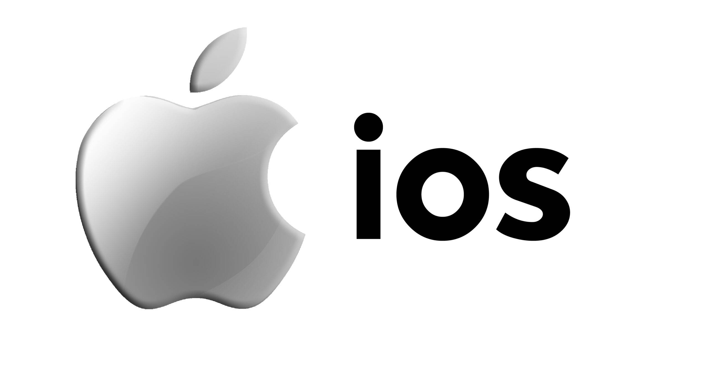
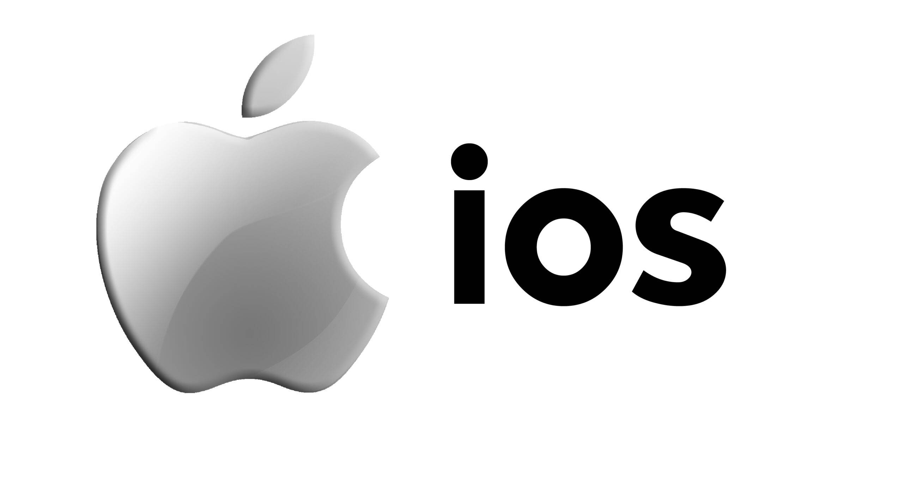

At Kreativan Technologies, we help small & midsize business enterprises across the globe, get the desired ROI through our bespoke web and allied services. The whole idea is to reach out to a wider audience locally or globally, and convert prospects to new customers. The bottomline is to increase conversion rate, visitor footfalls, traffic, sales, revenue, leads and new subscribers for any organization, across the board.
As the best digital marketing agency, we’ve mastered the art of website design, development and optimization; thanks to our highly professional team of qualified web designers & developers, web analysts, SEO strategists, IT experts and digital marketers that leave no stone unturned in bolstering a site’s overall performance


 
